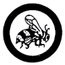

Beekeeping
- Look for and make a study of a beehive. Remove the combs. Find the queen. Calculate the amount of the brood, and number of queen cells. Calculate the amount of honey in the hive.
- Show the difference among the drones, workers, eggs, larvae, and pupae at different stages. Tell the difference between honey, wax, pollen, and propolis. Tell where wax comes from. Explain the part played in the life of the hive by the queen, the drones, and the workers. Tell how bees make honey.
- Hive a swarm or divide at least one colony. Explain how a hive is made.
- Prepare the honey for marketing.
- Write a 200-word essay on how and why the honeybee is used in pollinating farm crops. Name five (5) cops in your area pollinated by honeybees.
|